東京湾観音/千葉県富津市
拝啓
春の足音が近付いてくる今日この頃、皆さん如何お過ごしでしょうか。
私は一足早い春を求めて房総半島に来ました・・・
・・・・・・って寒いじゃねえかっ！
というわけで私は今、寒風吹きすさぶ大観音の足元で震えているのだった。
しかも最近すっかり暖かくなったもんで、思いっきり油断しまくりの薄着。しかも天気は小雨混じり。
最悪のコンディションである。
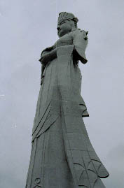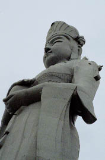
・・・ここは富津岬の南にある東京湾観音。57メートル、20階建ての救世観音像である。
完成したのが昭和36年だから大観音ファミリーの中でも古株格だ。両手でおにぎりを握っているような形で宝珠を抱えているポーズで、もちろん登頂可能だ。
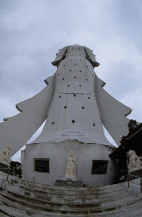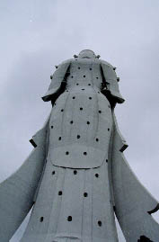
後ろからのビュー。両脇に延びるは衣の袖。観音様、振り袖です。
正面にはほとんどない採光＆展望用の小窓が裏側にはびっしり。
で、背面の足元が胎内巡りのスタート地点。駆け込むように中に入る。寒いから。
この大観音の基本的な構造は中央に丸柱があり、その周りに螺旋階段があるという典型的なスタイル。というか建設の時期からいってここのがオリジナルなのかも知れない。
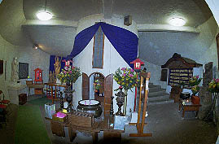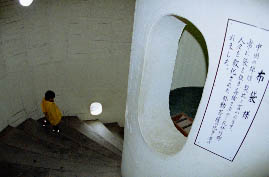
一階の祭壇コーナーを過ぎると途中にぽつぽつと中央の柱をくり抜いた部分に七福神などが安置されているだけ。
外から見た小窓はガラスなど入っておらず、文字どおりのお寒い空間。
最上階までこの調子なんだろうか、などと思いつつだらだらと螺旋階段を登る。
しかし！！
12階辺りから様子がおかしくなってきた。丁度外から見ると腕の下の辺りである。
それまで単純な螺旋階段が続いているだけの通路に突然横道が現れたのである。迷う事なくそちらへ。
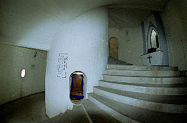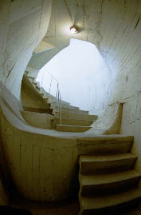
するとそこには異様な空間が待ち構えていた。歪んだ円形の部屋にとって付けたような階段。恐らく観音像の左腕の中にいるのだろう。平衡感覚が消滅していく様を楽しみながら登って行く。
するといきなり寒風が吹き付けてきた。そこは屋外なのだ。見上げれば丁度観音様の左肘の内側。そしてそこからテラス状に左腕の上を歩いていけるではないか。眼下には東京湾が拡がる。おお、さむ〜。
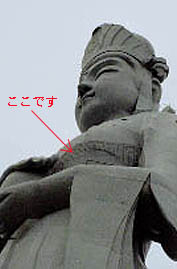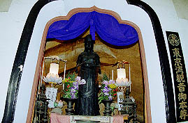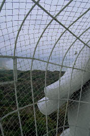
腕の先には巨大な右手の指が見える。そしてその指の下には観音さんが持っている宝珠があった。そこからまた中に入る。
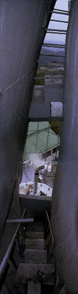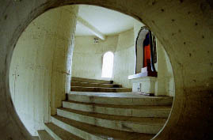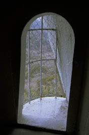
そこは13階。
メインの螺旋階段を進むとここに至るようだ。
丁度宝珠の内側にあたる部分に小部屋があり本尊（といってもこの大観音のミニチュアなのだが）がまつられている。
さらに螺旋階段を登り14階へ。
今度は右腕部分の上のテラスに出られるのだが、そこに至る右脇の下部分が壮絶だ（写真左）。
胴体と右手の隙間に無理矢理付けたような強引な空中通路やあまりにも無謀すぎて封鎖されたトマソン状階段などが立体的に展開しているその眺めはこの東京湾観音の真骨頂といってよい。
この眺めはかつて軍艦島でみた高密度の立体迷路状の空間を思い出させる。
脇の下だというのに・・・
15階は観音様の肩の部分に当たるため部屋が広い。螺旋階段もここでお終い。
あ、ここで終わりなのかなあ、などと思いつつ中央の柱を廻りこむと、そこには段梯子があった。
おお、まだ先があったのか！
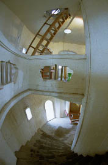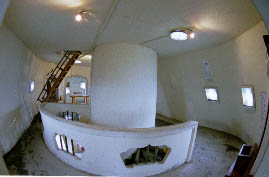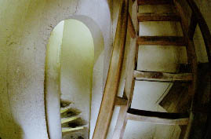
見れば、このフロア以下では七福神などが安置されていた中央の円柱の内部も螺旋階段になっている。もちろん今迄のような広い螺旋階段ではなくひと一人が通れる位の幅だ。
ここから先は頭部になるので各フロアの面積が狭くなる。当然、階段のスペースも小さくなってくる。
私が訪れた時は数人の参拝客、というか近所のハナタレ小僧しかいなかったが、建立当時は客も結構来たのだろう。
その客が渋滞しないように段梯子と螺旋階段という2タイプの階段を設けたのだろう。
取り敢えず段梯子の方を登ってみる。
で、16階。今度は螺旋階段の方を登ってみる。
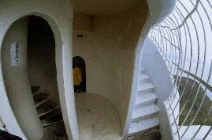
そこには展望スペースが。ここは観音様の後頭部である。ここにも外の階段がある。この辺複雑な三叉路になっていて、参詣路が良く把握できない。まるで公園の遊具を複雑＆巨大化させたようなつくりだ。ちょっとした迷路のようで気分はRPGだ。
で、鼻の穴を内側から見たりして、ついに最上階の20階に着く。
そこは観音様の頭のさらに上の宝法冠という帽子のような部分の内部で、御丁寧に観音様の頭のレプリカがぽつんと置かれている。
天井に目をやればヨレヨレのハッチがある。恐らくこの上に建つアンテナ（何故かアンテナがあるのだよ）のメンテナンス用のものなのだろうが、気になる。
あとは記帳ノートと賽銭箱と小さな観音像、これがこの部屋の全てである。
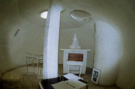しかし私の心はRPGを制覇したかのごとく晴々としていた。
外部テラスあり、螺旋階段あり段梯子あり、しかもそれらが外側の大観音のカタチに合わせるためにかなり無茶をしており、結果として思いっきり歪んだ空間が出来上がってしまった不思議なところだ。
下って行く途中、右手部分の展望台から外を眺めた。何時の間にか雨は上がり、雲の切れ間から陽が差し込んでいた。まさに雨のち晴の展開であった。素晴らしい大観音である。
ただ、土産物が貧弱なのがタマに傷。この感動を思いっきり土産物にぶつけたい気分なのだが、お守りとテレカ位しかない。出来ればこの複雑な大観音像の完全攻略本などを置いてもらいたいものである。
2000.3.
珍寺大道場 HOME